One-time semantic prior
One pre-navigation query estimates target-room preferences, scale, and confusers.
Semantic evidence
meets geometric access.
A unified room-level policy that aligns semantic exploration with topology-aware navigation for efficient, long-horizon object search.
TL;DR — Indoor rooms naturally exhibit functional semantic partitioning and topological connectivity. ProNav leverages this structure with a unified room-level policy that combines global semantics from target-conditioned room priors, posterior local semantics from online evidence, and geometry–topology costs to adapt exploration preferences and strategies for robust, efficient object navigation.

Zero-shot object navigation requires locating open-vocabulary targets in unseen environments without task-specific training. Its long-horizon challenge is to combine semantic guidance, online visual evidence, and geometric accessibility. ProNav is a training-free, room-aware framework with a unified room-level semantic-geometric frontier-guided policy and scale-aware multi-frame verification. A single pre-navigation LLM query instantiates target-room and category-level verification priors. Indoor rooms naturally exhibit functional semantic partitioning and topological connectivity. ProNav leverages this structure with a unified room-level policy that combines global semantics from target-conditioned room priors, posterior local semantics from online evidence, and geometry–topology costs to adapt exploration preferences and strategies for robust, efficient object navigation. Experiments on HM3Dv1, HM3Dv2, and MP3D show consistently improved path efficiency among compared training-free methods; real-world trials on two low-cost robots further demonstrate deployment feasibility.
Why room-level reasoning?
Semantic evidence
meets geometric access.
Local mapsLocal relevance misses room context.
Step-wise LLMsRepeated queries add cost and inconsistency.
ProNavGlobal–local semantics and geometry–topology costs guide exploration.
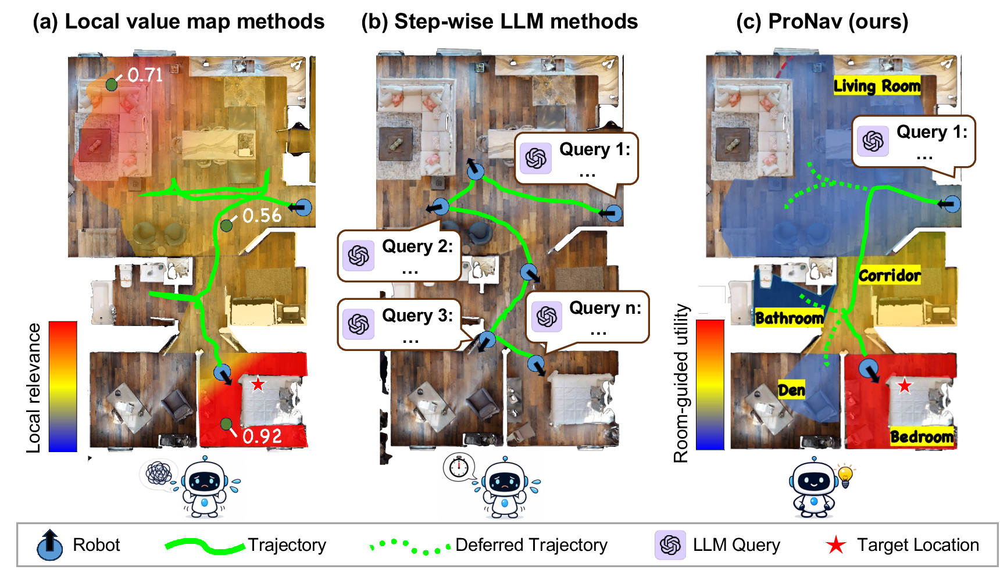
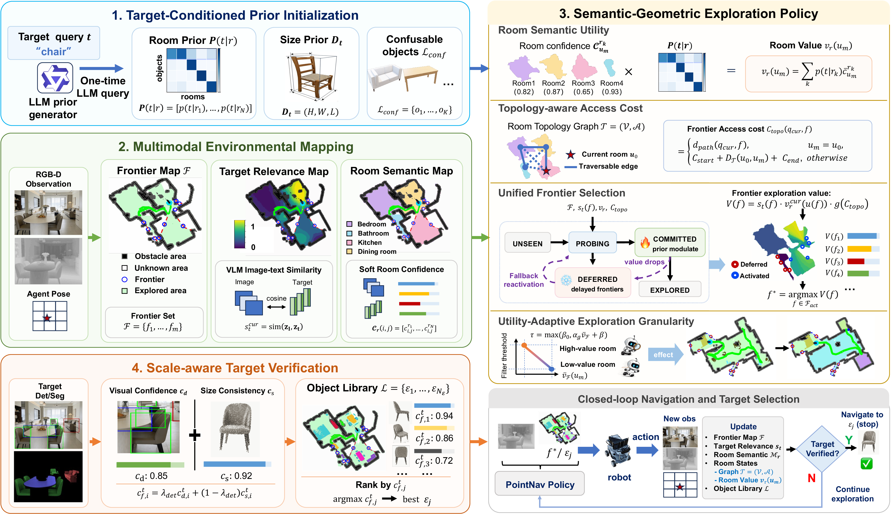
One pre-navigation query estimates target-room preferences, scale, and confusers.
Target-conditioned priors supply global room semantics; online evidence supplies posterior local semantics that adapt exploration preferences and search granularity.
Geometry–topology costs refine these preferences into reachable frontier choices.
Cross-frame confidence and scale checks confirm the target.
Real-robot trials in a connected office environment evaluate topology-aware ablations and multi-target cross-room navigation.
Low-cost yet effective: two robotic platforms and an indoor scene.


Online mapping
ProNav reliably segments connected indoor observations into room-level regions, grounding posterior local semantics and geometry–topology-aware frontier selection.
Room-prior semantic exploration substantially reduces redundant search in low-prior-value regions, while geometry–topology constraints further avoid inefficient path detours.
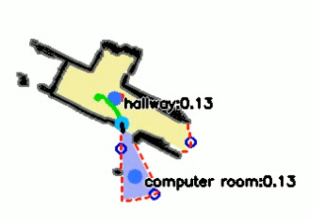
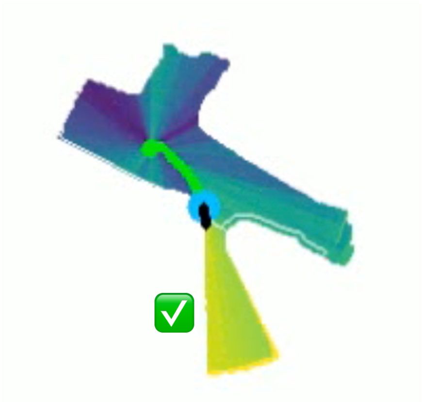
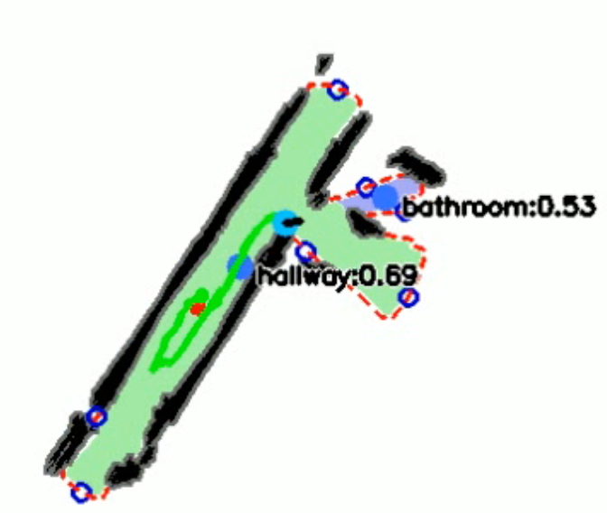
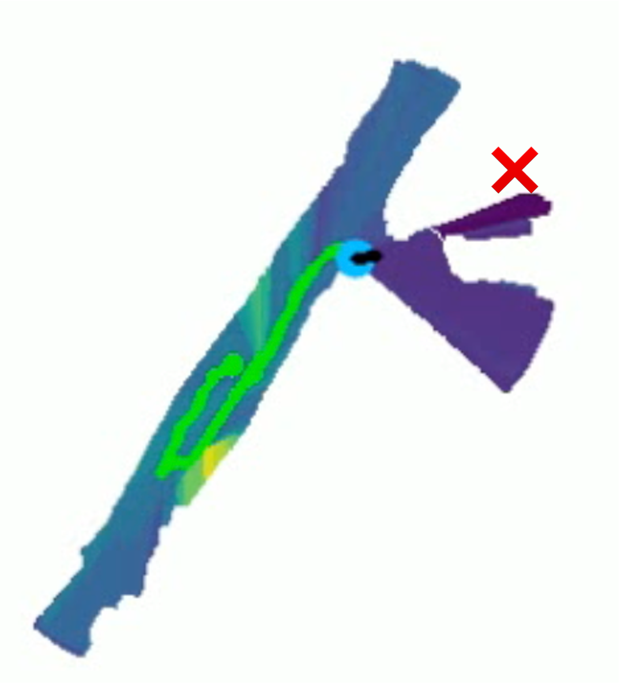
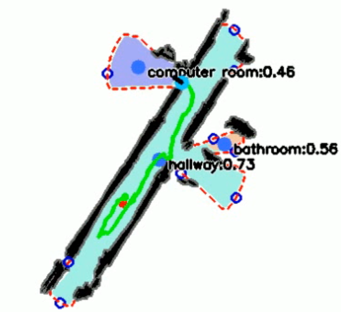
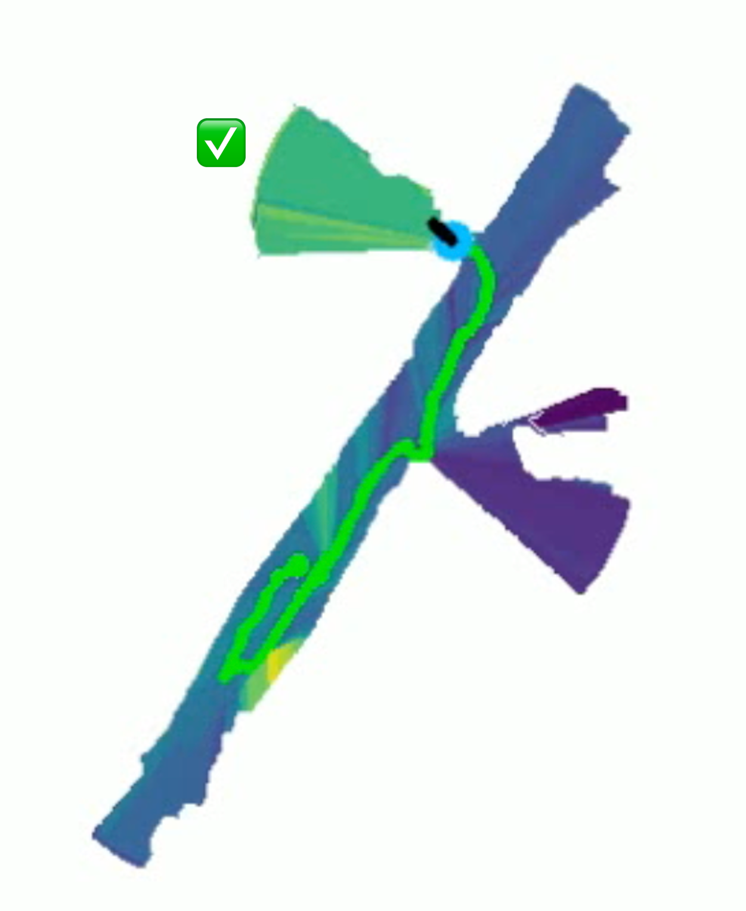
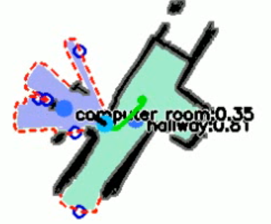
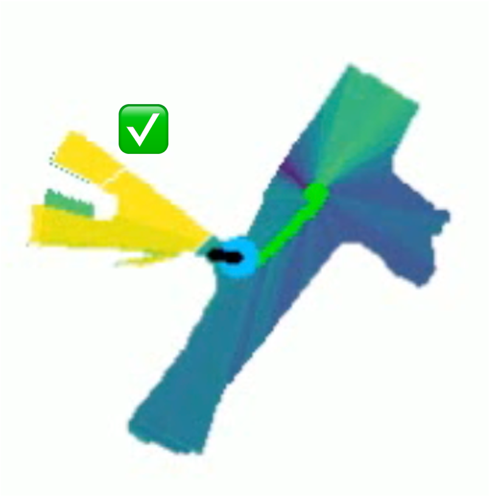

To preserve anonymity, portions of the videos are mosaicked.
Shared room-level semantic-geometric scoring vs. local target relevance only on real-world scenes.


More experimental results, ablation comparisons, and performance analysis will be presented in detail in the paper.
Experiments are conducted in Habitat on HM3Dv1, HM3Dv2, and MP3D using the official ObjectNav success, SPL, and softSPL metrics.


Local relevance only vs. ProNav on HM3D.
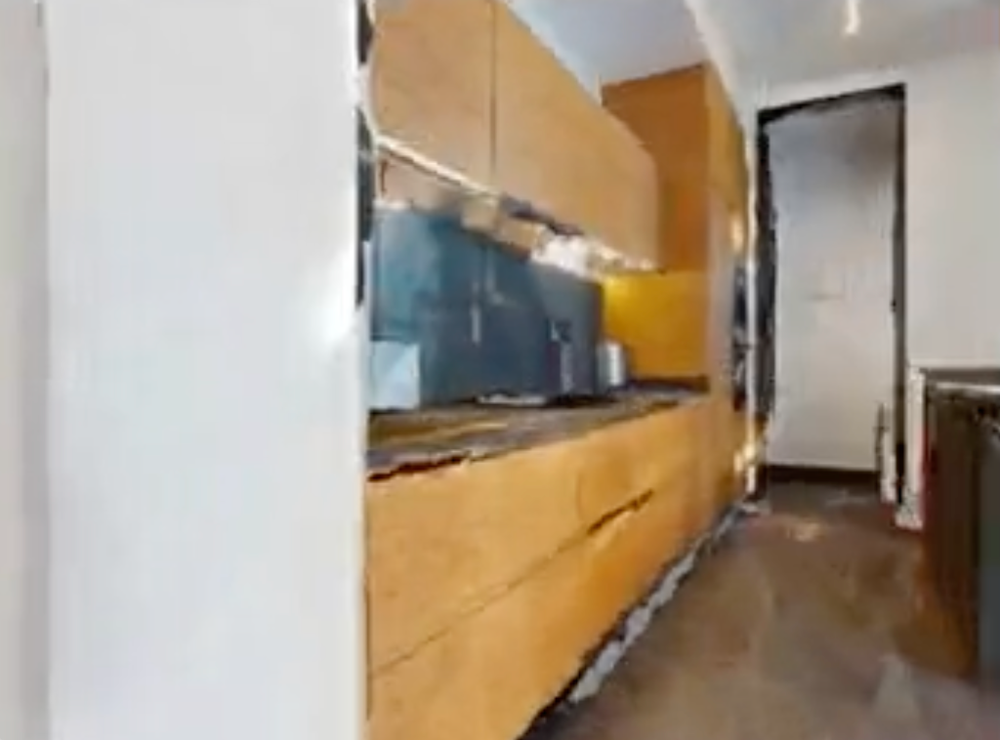
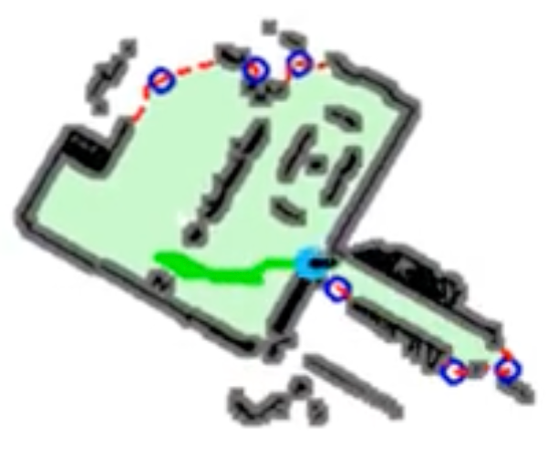
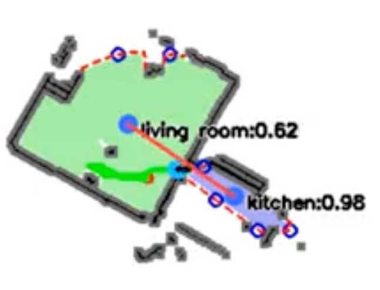
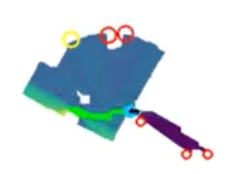
Key decision · Step 63
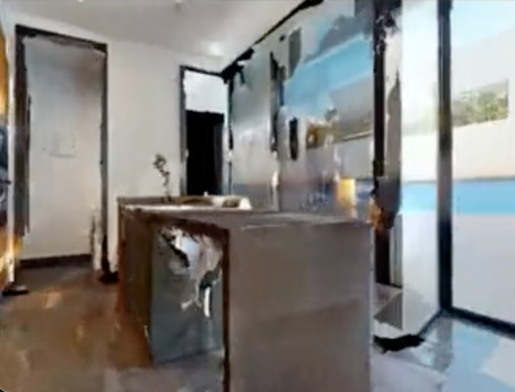
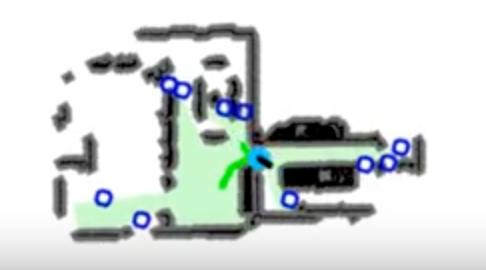
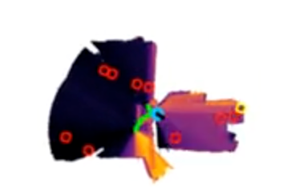
Key decision · Step 53
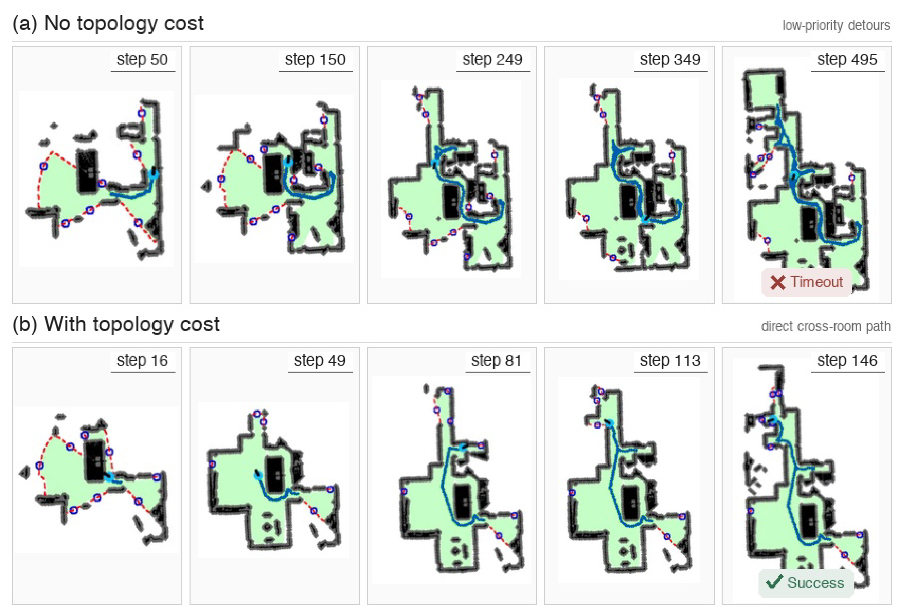


Trajectory snapshots are shown every few seconds. Hover over a panel to inspect it.
ProNav vs. fixed granularity on HM3D.
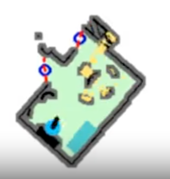
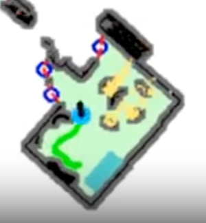
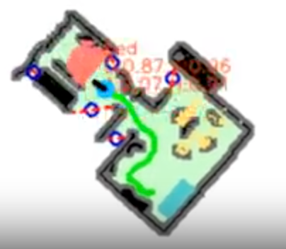
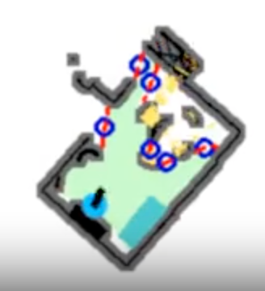
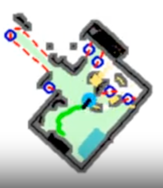
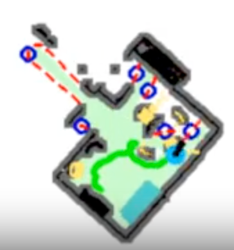
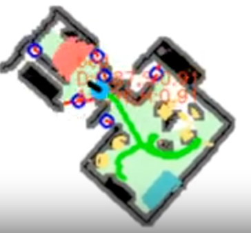
More experimental results, ablation comparisons, and performance analysis will be presented in detail in the paper.